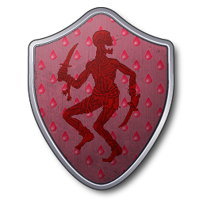
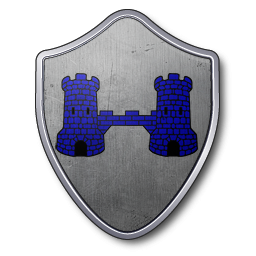
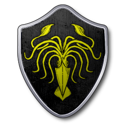
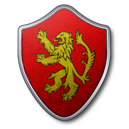
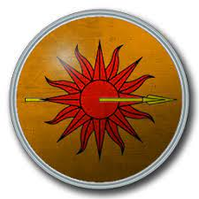
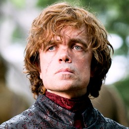
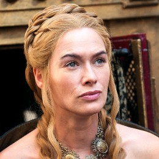
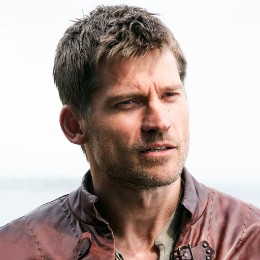
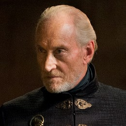

Maison Arryn

Maison Baratheon

Maison Bolton
Maison Frey
Maison Greyjoy
Maison Lannister
Maison Martell
Maison Stark

Maison Targaryen

Maison Tully

Maison Tyrell

Garde de Nuit

Sauvageons

| Nom de famille | Image |
|---|---|
Maison Arryn |
|
Maison Baratheon |
|
Maison Bolton |
 |
Maison Frey |
 |
Maison Greyjoy |
 |
Maison Lannister |
 |
Maison Martell |
 |
Maison Stark |
|
Maison Targaryen |
|
Maison Tully |
|
Maison Tyrell |
|
Garde de Nuit |
|
Sauvageons |
|
La maison Arryn est l'une des grandes maisons des Sept Couronnes et gouverne la région du Val (The Vale). Elle descend des rois de la Montagne et du Val (Kings of Mountain and Vale) et a son siège à la forteresse des Eyrié (The Eyrie), un petit château situé au sommet d'une montagne. Les chefs de la maison Arryn sont gouverneurs de l'Est (Warden of the East) depuis la fondation des Sept Couronnes. Son blason est un faucon blanc sur ciel de lune blanche, et sa devise est « Aussi haute qu'honneur » (« As High as Honor »). Les bâtards nés au Val sont nommés « Stone ». Ses principales maisons vassales sont les Baelish, les Belmore, les Corbray, les Grafton, les Rougefort (Redfort), les Royce, les Sunderland, les Vanbois (Waynwood) et les Veneur (Hunter).
La maison Baratheon est la plus récente des grandes maisons des Sept Couronnes, et gouverne la région des Terres de l'Orage (The Stormlands). Fondée par le frère bâtard du premier roi targaryen, Orys Baratheon, son siège se situe à Accalmie (Storm's End) que gère Renly Baratheon, alors que sa branche royale est à la capitale Port-Réal (King's Landing) avec Robert Baratheon, et la branche cadette de Stannis Baratheon se tient aussi à Peyredragon (Dragonstone).
La maison Greyjoy est l'une des grandes familles de Westeros et la suzeraine des îles de Fer (The Iron Islands) et a son siège à Pyk (Pyke). Son blason est un kraken doré sur champ noir et sa devise est « Nous ne semons pas » (« We Do Not Sow »). Les Greyjoy devinrent les seigneurs protecteurs des îles de Fer (Lords Paramount of the Iron Islands) après que la maison Targaryen a conquis les Sept -Couronnes et permis aux Fer-nés (Ironborn) de choisir leur dirigeant. Les Greyjoy sont réputés pour la puissance de leur flotte, et ils ont souvent conduit des raids contre d'autres maisons majeures dans un but de pillage. Les bâtards nés dans les îles de Fer sont nommés « Pyke ».
La maison Lannister est la maison suzeraine des Terres de l'Ouest et a son siège à Castral-Roc. Son blason est un lion d'or rugissant sur champ rouge et sa devise est « Je rugis » (« Hear Me Roar ») bien que la devise officieuse des Lannister soit « Un Lannister paie toujours ses dettes ». Les chefs de la maison Lannister sont gouverneurs de l'Ouest (Warden of the West) depuis la fondation des Sept Couronnes. C'est la maison la plus riche des Sept Couronnes car elle contrôle de nombreuses mines d'or. Ses principales maisons vassales sont les Brax, les Crakehall, les Farman, les Lefford, les Marpheux, les Prestre et les Serrett. Les Lannister sont généralement blonds aux yeux verts, un aspect courant parmi les membres de la maison, notamment les enfants de la branche aînée de la maison.
| Image | Nom |
|---|---|
|  | Tyrion Lannister |
|  | Cersei Lannister |
|  | Jaime Lannister |
|  | Tywin Lannister |
La maison Martell est la maison suzeraine de la péninsule de Dorne et a son siège à Lancehélion. Son blason est un soleil rouge traversé d'une lance dorée sur champ orange et sa devise est « Insoumis, invaincus , intacts » (« Unbowed, Unbent, Unbroken »). Les bâtards nés à Dorne sont nommés « Sand ». Ses principales maisons vassales sont les Dayne, les Ferboys, les Forrest, les Gargalen, les Jordayne, les Noirmont, les Poulet et les Uller. Le peuple de Dorne, les Dorniens, est issu d'un métissage entre les Andals qui habitaient le territoire avant la conquête et le peuple Rhoynar, venant d'Essos et fuyant l'expansion de Valyria, Andals et Rhoynar se mélangèrent et le peuple Dornien garda plusieurs des coutumes des Rhoynars, notamment le fait que la succession ne se fait pas par primogéniture mâle, c'est-à-dire que le plus proche parent, fils ou fille, hérite du parent trépassé. Contrairement aux autres provinces du royaume des Sept Couronnes, Dorne est considérée comme une principauté, et son seigneur n'est pas un seigneur suzerain mais un prince ou une princesse.
lien vers la serie Game of thrones est : Game of Thrones